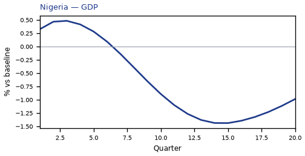
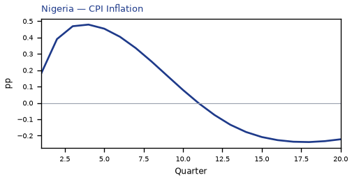
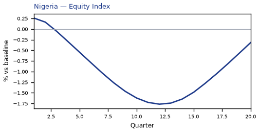
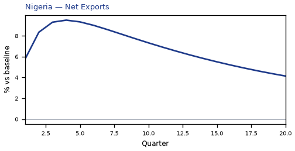
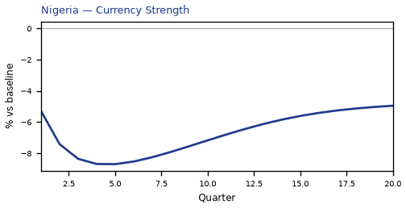
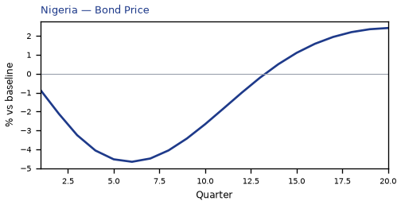
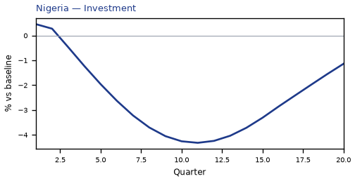
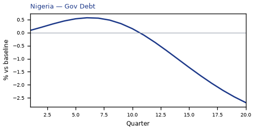
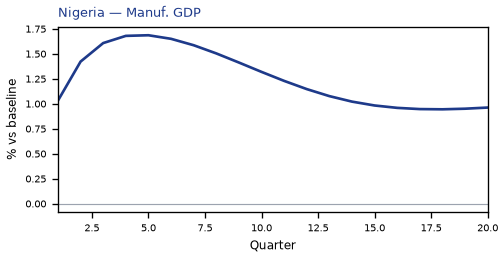
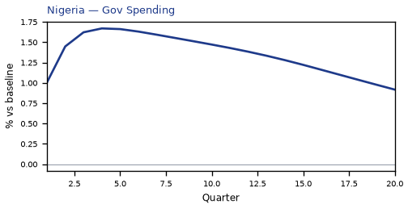

NG — Nigeria
The main impact of oil at $200 a barrel on Nigeria would be a large drop in GDP of 1.44% by Q15. Equities peak at -1.77% in Q12.
Demand and trade. Consumption peaks at -0.82 % vs baseline in Q15, from +0.12 in Q1 to -0.64 in Q20. Investment peaks at -4.32 % vs baseline in Q11, from +0.46 in Q1 to -1.14 in Q20. Net Exports peaks at +9.50 % vs baseline in Q4, from +5.78 in Q1 to +4.14 in Q20. Gov Spending peaks at +1.67 % vs baseline in Q4, from +1.01 in Q1 to +0.92 in Q20. Gov Debt peaks at -2.68 % vs baseline in Q20, from +0.09 in Q1 to -2.68 in Q20.
External / FX. The real exchange rate shows real appreciation (a stronger home currency). Currency Strength peaks at -8.69 % vs baseline in Q5, from -5.29 in Q1 to -4.95 in Q20.
Labour. Employment peaks at -1.08 % vs baseline in Q20, from +0.05 in Q1 to -1.08 in Q20. Unemployment peaks at +0.09 pp in Q16, from -0.01 in Q1 to +0.08 in Q20. Real Wages peaks at +1.58 % vs baseline in Q11, from +0.01 in Q1 to -0.52 in Q20.
Prices. The three-year CPI impulse is +3.13 percentage points. CPI Inflation peaks at +0.48 pp in Q4, from +0.18 in Q1 to -0.22 in Q20. Domestic Infl. peaks at +0.33 pp in Q4, from +0.13 in Q1 to -0.16 in Q20. Marginal Cost peaks at -0.85 % vs baseline in Q15, from +0.21 in Q1 to -0.58 in Q20.
Financial conditions. Policy Rate peaks at +1.86 pp (annualized) in Q6, from +0.35 in Q1 to -0.97 in Q20. Govt 2Y Yield peaks at +1.56 pp (annualized) in Q3, from +1.40 in Q1 to -0.83 in Q20. Govt 5Y Yield peaks at -0.65 pp (annualized) in Q15, from +0.50 in Q1 to -0.51 in Q20. Govt 10Y Yield peaks at -0.39 pp (annualized) in Q14, from +0.02 in Q1 to -0.30 in Q20. Bond Price peaks at -4.66 % vs baseline in Q6, from -0.87 in Q1 to +2.42 in Q20. Equity Index peaks at -1.77 % vs baseline in Q12, from +0.26 in Q1 to -0.32 in Q20. Tobin's Q peaks at -3.02 % vs baseline in Q11, from +0.32 in Q1 to -0.80 in Q20. House Prices peaks at -1.46 % vs baseline in Q20, from +0.05 in Q1 to -1.46 in Q20. Bank Credit peaks at +0.01 % vs baseline in Q11, from +0.00 in Q1 to +0.01 in Q20. Credit Spread peaks at +0.00 pp in Q1, from +0.00 in Q1 to +0.00 in Q20.
Sectoral and capital. Manuf. GDP peaks at +1.69 % vs baseline in Q5, from +1.03 in Q1 to +0.96 in Q20. Services GDP peaks at -0.71 % vs baseline in Q15, from +0.16 in Q1 to -0.49 in Q20. Capital Stock peaks at -0.25 % vs baseline in Q20, from +0.00 in Q1 to -0.25 in Q20.
Timing. By Q20 GDP is still -0.99% from baseline.
These figures are model IRFs versus baseline, not forecasts.











source=live · global_macro_v5 · contract v6 · Q1–Q20 JSON · not financial advice